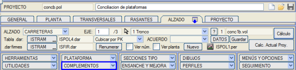
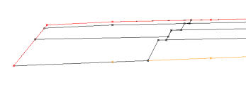
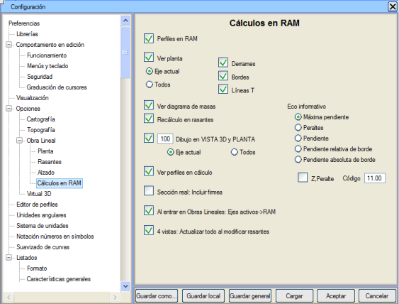
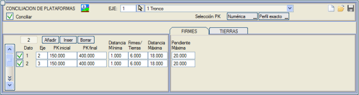
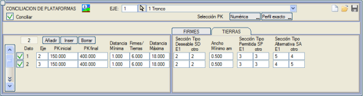
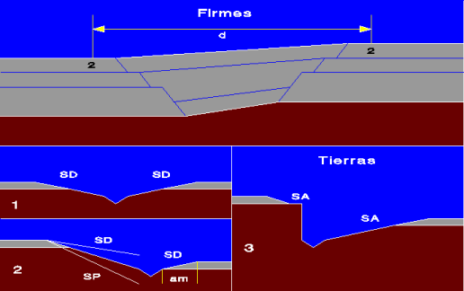
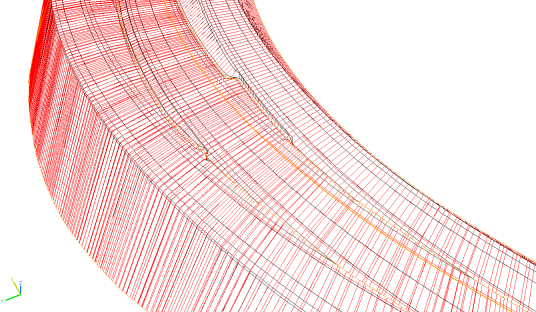
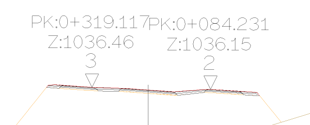

Bu menüden, önceden bağlanmış iki eksenin (katılım veya ayrım rampası) geometrisini uyumlu hale getirmeye çalışacağız. Bu menü, Düşey Güzergah menüsünde, Eklentiler seçenekleri içinde yer almaktadır.

Platformların uyumlaştırılması, iki eksenin bitişik tarafındaki geometriyi ve bir kavşağın ABCDE karakteristik noktalarından sonraki sınır çizgisi bölgesindeki geometriyi değiştirir. İki eksen arasında platform uyumlaştırması yapılmadan önce, kavşağın tüm aşamalarının tanımlanmış olması gerekir.
Uyumlaştırma, bu nedenle, Proje menüsünden yapılan hesaplamanın son aşaması olarak yürütülür ve şunları gerektirir:
- Üstyapıların enkesite dahil edilmesi. Hem Ana Eksen'de hem de Rampa Ekseni'nde farklı üstyapı kalınlıklarının tanımlanmış olması gerekir. Üstyapıların uyumlaştırılması, her iki eksenin banketlerinin farklı katman kalınlıklarında gerçekleştirilecektir.
- Uyumlaştırma bölgesinde önceden tanımlanmış bir sınır çizgisi bulunması.
- Enkesitlerin RAM'de aktif olması. Yapılandırma, Tercihler, Seçenekler, Güzergah Projesi, Bellekte (RAM) Hesaplamalar açılır menüsünden.

İki eksen arasındaki uyumlaştırma, daha küçük numaralı eksende tanımlanır ve aşağıdaki parametrelerle gerçekleştirilir:
- Tanımlamanın yapıldığı eksen üzerindeki Başlangıç KM ve Bitiş KM. Genellikle sınır çizgisinin ilk noktasından önce bir başlangıç kilometresi ve platformların uyumlaştırılmasını artık istemediğimiz bir bitiş kilometresi tanımlanacaktır. Her iki kilometre de yaklaşıktır.
- Mesafe aralığı: Tanımlanan kilometre bölgesi içinde, platform kenarları (kod 2) minimum mesafeden daha büyük ve üstyapı/toprak işleri mesafesinden daha küçük bir mesafede ise üstyapı uyumlaştırması yapılır; mesafe üstyapı/toprak işleri mesafesinden büyük ve maksimum mesafeden küçük ise toprak işleri uyumlaştırması yapılır.
Ana eksene bağlanan katılım veya ayrım rampasında kod 2 bulunmadığı durumlarda, program tek hatlı karayolu ekseni olan kod 1'i analiz eder.

Uyumlaştırmayı gerçekleştirmek için Uyumlaştır kutucuğunun ve aynı şekilde, yukarıdaki resimde gördüğümüz gibi uyumlaştırmamız gereken eksenlere ilişkin tüm verilerin etkinleştirilmesi zorunludur.
Üstyapı Uyumlaştırması:
- Bitişik banketler bölgesindeki kırmızı kot, tesviye yüzeyi ve üstyapı katmanları yüzeylerinin geometrisini, bu katmanların ana platformların üstyapı katmanları tanımında başladığı noktalardan itibaren hizalayarak değiştirir.
- Bu uyumlaştırmanın yapılabilmesi için, iki platform kenarı arasındaki eğimin verilen bir değerden küçük olması gerekir.
Toprak İşleri Uyumlaştırması:
- Öncelikle, her eksen için tercih edilen bir tip kesit kullanarak iki platform birleştirilmeye çalışılır (her iki kesit de mevcut eksende tanımlıdır).
- Mevcut eksenin tercih edilen kesitinin dolgu kesitleri ve hendeği kullanılır.
- Eksenlerin kesitleri arasında bir kesişim yoksa veya kesitlerden birinin yatay gelişimi tanımlanan minimumdan (am) daha az ise:
- Daha alçak olan eksene, minimum genişliğe kadar tercih edilen kesiti ve ardından hendeği koymak denenir. Daha sonra, diğer eksenle olan bitiş şevi kontrol edilir; bu şev, tercih edilen dolgu kesitinin şevi ile izin verilen kesitin şevi arasında olmalıdır.
- Ve bu koşulu sağlamazsa, alternatif kesitler kullanılır. Alternatif tip kesitler uygulandığında, kenarı daha yüksek olan eksen dolgu kesitini, kenarı daha alçak olan ise yarma kesitini uygular.


Her eksene, hendek tabanına kadar olan toprak işleri atanır.
Uyumlaştırmayı gerçekleştirmek için, bu menüyü tamamen tanımladıktan sonra Proje sekmesinden hesaplama yapmamız gerekecektir. Ardından, bu uyumlaştırmanın kontrolü için Katılım Kolu Ekle menüsünden faydalanarak ana eksen enkesitlerinde uyumlaştırılmış rampa platformlarını görebiliriz.
Bir ana eksenin iki rampa ekseniyle uyumlaştırılmasının üç boyutlu görünümü:

Katılım Kolu Ekle menüsünden iki rampalı bir ana eksen enkesitinin görünümü:

|